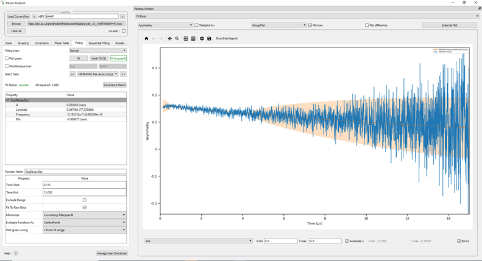

Muon Changes#
Frequency Domain Analysis#
New Features#
Users can now select the unit for the frequency spectra (MHz or Gauss) in plotting, by picking either
FrequencyorFieldrespectively after a transform has been calculated.
Bugfixes#
Fixed a bug that prevented the frequency spectra from being plotted when data was binned.
When plotting transformations, FFTs now have y-units of
intensityand Maxents now have y-units ofprobability.
Muon Analysis and Frequency Domain Analysis#
New Features#
Instead of plotting the confidence interval of a fit as an error bar, it is now represented by a shaded region.
{kind=link}

Improvements#
Changes have been made to improve the speed of Muon Analysis and Frequency Domain Analysis.
The Results Tab will now display a warning (red text and a tooltip) if the results table already exists.
The results table now produces errors for log values (when they are available).
The plots no longer use scientific notation for the axis values.
On resizing the GUI, priority is given to plotting.
The plot guess option in Fitting can now have its range interpolated or extrapolated.
The
alphavalues on Grouping Tab are now to six decimal places.The numerical values in the
run infobox on the Home Tab are now rounded to either 4 significant figures or a whole number, whichever is more precise.The Sequentially Fit all button is now visible for 4K displays.
The Results Tab will now preserve the workspace selection after a fit. However, it will reselect a fit that has been recalculated.
When using
Browseto load data from a different instrument, a warning is now shown saying that the data has not been loaded.
Bugfixes#
Detaching tabs in Muon Analysis or Frequency Domain Analysis GUIs and then closing Mantid no longer causes a crash.
Dragging tabs in Muon Analysis or Frequency Domain Analysis GUIs no longer shows a translucent preview that does nothing.
Mantid no longer crashes when changing tabs in either Muon Analysis or Frequency Domain Analysis on MacOS.
Fixed a bug that prevented the GUI working with workspace history and project recovery.
Undo fit now resets when the function structure changes. This prevents a bug caused by trying to revert the current function to the state of a previous one.
When a new fit is performed in Muon Analysis or Frequency Domain Analysis it no longer reselects all parameter workspaces in the results tab.
ALC#
New Features#
Can now read
nxs_v2files.
Bugfixes#
Fixed a bug that allowed decimal values for custom groupings.
Algorithms#
Improvements#
LoadPSIMuonBin can now load a subset of the spectra.
Fitting Functions#
New Features#
Added two Activation fitting functions to
MuonModellingFit Functions.ActivationK can be used for data in Kelvins.
ActivationmeV can be used for data in meV.
Added a Critical peak of relaxation rate for fitting to
MuonModelling\MagnetismFit Functions.Added two fitting functions for the decoupling of asymmetry in the ordered state of a powedered magnet for fitting.
DecoupAsymPowderMagLong can be used for longitudinal polarization.
DecoupAsymPowderMagRot can be used for rotational asymmetry.
Added a Magentic Order Parameter function to
MuonModelling\MagentismFit Functions.Added a Muonium-style Decoupling Curve function to
MuonModellingFit Functions.Added a Power Law fitting function to
MuonModellingFit Functions.Added a Smooth Transition function to
MuonModellingFit Functions.
Improvements#
created a new category,
Magnetism, in theMuonModellingFit Functions list.Gaussian, Lorentzian and Polynomial fitting functions can now also be found under
MuonModellingin the Fitting Functions Tree.